Submitted in partial fulfillment of the requirements for the degree of
Master of Computer Applications (MCA)
| Sr. No. | Description | Page No. |
|---|---|---|
| 1 | Introduction to the Project | 3 |
| 2 | Real-World Utility of an EdTech Website | 4 |
| 3 | Target Audience and Profit Analysis | 5 |
| 4 | Hardware & Software Requirements | 6 |
| 5 | Technology Stack (.NET & Database) | 7 |
| 6 | System Architecture & Data Flow | 8 |
| 7 | User Authentication & Security Module | 9 |
| 8 | Course Catalog & Dynamic Filtering | 10 |
| 9 | Shopping Cart & Coupon Management | 12 |
| 10 | Payment Gateway Integration (Razorpay) | 14 |
| 11 | Student Dashboard & Live Class Integration | 16 |
| 12 | Admin Panel: User & Course Management | 18 |
| 13 | Admin Panel: Order & Coupon Management | 20 |
| 14 | Core Coding Implementation (HTML, CSS, JS, .NET) | 22 |
| 15 | User Interface Walkthrough (Main Page & Admin Dashboard) | 24 |
| 16 | Software Testing & Quality Assurance | 26 |
| 17 | Conclusion & Future Enhancements | 28 |
The primary objective of this project is to develop a highly scalable and comprehensive Learning Management System (LMS) specifically designed to facilitate seamless online education. In a world where geographical boundaries no longer limit the pursuit of knowledge, this platform serves as a vital bridge between expert instructors and eager students. By providing a centralized, interactive hub, the system empowers learners to discover, purchase, and seamlessly manage a wide array of educational courses from the comfort of their homes.
In the post-pandemic era, the educational landscape has undergone a massive paradigm shift. Digital learning has rapidly evolved from being a mere luxury to an absolute necessity. Traditional classroom models are increasingly being supplemented—and in many cases, replaced—by online platforms that offer 24/7 accessibility, self-paced learning, and interactive virtual environments. This project is meticulously engineered to simulate the robust architecture and business model of real-world, industry-leading EdTech companies like Udemy or Coursera.
To ensure a professional and secure user experience, the platform integrates several advanced technical functionalities:
Ultimately, this project stands as a complete, end-to-end software solution that demonstrates the integration of modern frontend user interfaces with secure, reliable backend business logic and database management.
A Course Website or EdTech platform has massive real-world applications. It completely transforms the traditional educational ecosystem and corporate training environments in the following ways:
An EdTech platform operates on a highly lucrative, scalable business model that provides mutual financial and educational benefits to all parties involved. The system is designed to maximize Return on Investment (ROI) while minimizing operational overhead.
Students benefit from heavily discounted courses compared to the exorbitant fees charged by traditional offline coaching institutes. By learning online, they save significantly on commuting time, fuel, and accommodation costs. Furthermore, they gain lifetime access to high-quality course materials. The custom Promo/Coupon System implemented in this project further reduces their financial burden by allowing them to apply special discounts during checkout.
For educators, this platform is a powerful tool for generating passive income. A teacher records and structures a course only once, but that same digital asset can be sold to an infinite number of students globally. The platform automates tedious administrative tasks such as fee collection, receipt generation, and student enrollment. This means the instructor only needs to focus on content creation and teaching, rather than administrative overhead.
The platform owner operates as the marketplace facilitator and generates revenue through a scalable commission-based model. For every course sold by an independent instructor, the platform automatically retains a predefined percentage (e.g., 20%-30%) as a platform hosting fee. Additionally, the administrator has the ability to launch premium "Platform Exclusive" subscription batches, creating a highly profitable recurring revenue stream with profit margins nearing 90% after basic server and API costs are covered.
To successfully develop, compile, and run this full-stack EdTech application, specific hardware and software configurations are required.
This project was engineered using a highly robust, decoupled architecture that strictly separates the presentation layer (Frontend) from the business logic and data access layer (Backend). This modular approach ensures that the application is scalable, maintainable, and highly secure.
The user interface is entirely custom-coded. The skeletal structure of every page (Home, Dashboard, Cart, Admin Panel) is crafted using semantic HTML5. To ensure the application looks visually appealing and functions perfectly across all device sizes (Mobile, Tablet, Desktop), advanced CSS3 techniques including Flexbox, CSS Grid, and the Bootstrap framework were utilized.
All dynamic interactions—such as adding items to the cart, applying discount algorithms, and validating user inputs—are handled by vanilla JavaScript (ES6+). The frontend heavily relies on the modern `fetch()` API combined with `async/await` syntax to communicate with the backend asynchronously without forcing page reloads.
The core engine driving this platform, protecting user data, and serving API endpoints (`https://edtech.colaborazia.com/api/...`) is built upon the highly secure Microsoft .NET Framework (C#) / ASP.NET Core Web API. .NET was specifically chosen over lightweight frameworks like Node.js because of its enterprise-grade security, rapid compiled execution speed, and strict object-oriented typing. The .NET backend is responsible for verifying Razorpay payment signatures, generating cryptographic JWT tokens, and enforcing Role-Based Access Control (RBAC) ensuring students cannot access admin privileges.
A highly normalized relational database system, utilizing Microsoft SQL Server (or MySQL), serves as the persistent backend storage. The database maintains complex relational schemas, carefully mapping Users to their specific Orders, Orders to specific Courses, and tracking Coupon usage limits. The .NET backend communicates with the database using Entity Framework Core (ORM) and LINQ queries, which abstract raw SQL queries and actively prevent severe security vulnerabilities like SQL Injection attacks.
The application strictly adheres to a decoupled Client-Server RESTful architecture. The HTML/JS frontend acts purely as a presentation client, completely ignorant of the database structure. It fetches and posts lightweight JSON payloads to and from the .NET Web API endpoints.
The Data Flow Life Cycle:
Modern web security standards demand stateless authentication. Therefore, the authentication module securely identifies users and manages their sessions without relying on vulnerable, stateful server-side session cookies. The frontend implementation of this is meticulously handled in `authUser.js`.
When a user successfully submits their email and password, the .NET backend verifies the hashed password against the database. Upon success, the server cryptographically signs and returns a **JWT (JSON Web Token)**. This token contains a secure payload detailing the user's identity, expiration time, and role (User/Admin).
The JavaScript application captures this token and securely stores it in the browser's `localStorage`. To optimize performance, we implemented a custom Base64 decoding algorithm within the frontend JavaScript. This allows the browser to instantly read the user's name directly from the token's payload, dynamically updating the Header UI to say "Welcome, [Name]" instantly without needing to make a secondary API call to the server.
// Decoding JWT Token Logic (JavaScript)
function decodeJWT(token) {
const parts = token.split('.');
const payload = parts[1];
const base64 = payload.replace(/-/g, '+').replace(/_/g, '/');
const jsonPayload = decodeURIComponent(atob(base64).split('').map(function(c) {
return '%' + ('00' + c.charCodeAt(0).toString(16)).slice(-2);
}).join(''));
return JSON.parse(jsonPayload);
}
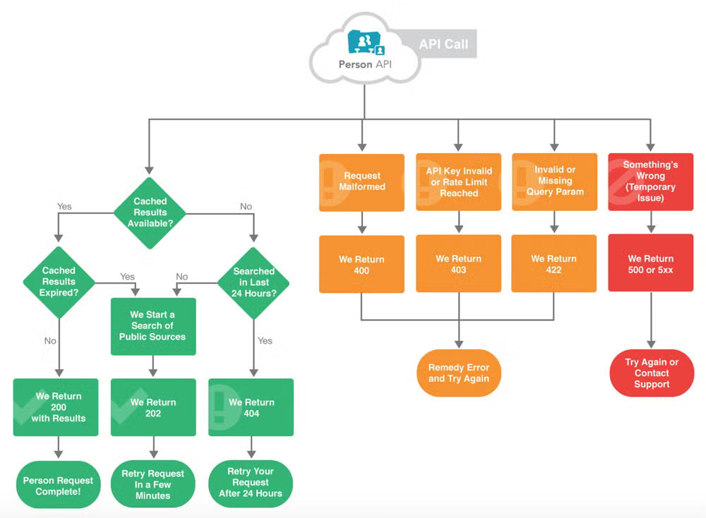
The central hub of the LMS is the Course Catalog, powered primarily by `get-all-course.js`. Instead of static HTML pages, the catalog dynamically constructs itself by mapping JSON data fetched from the .NET backend API into beautifully styled Grid and List views.
To provide a premium User Experience (UX) similar to industry giants, a highly complex **Dynamic Filtering Engine** was engineered. Students can check multiple boxes to filter courses by specific Categories (e.g., Programming, Arts) and Languages (e.g., English, Hindi) simultaneously.
The JavaScript logic intercepts these checkbox events, grabs their `data-id` attributes, and constructs a dynamic URL Query String (for example, `?categoryIds=1,2&languageIds=3`). The .NET backend reads this string and filters the SQL database accordingly. Additionally, to ensure rapid rendering and optimal memory usage, the JavaScript engine manages robust **Frontend Pagination**, mathematically slicing the JSON array to ensure only 9 courses are rendered per page.
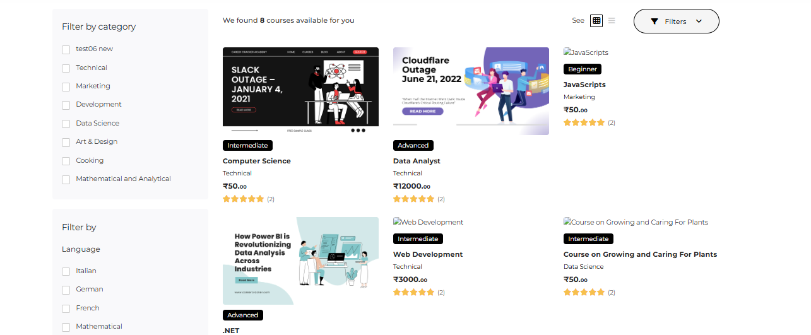
The platform boasts a seamless, highly interactive e-commerce shopping cart system. Users can click "Add to Cart" on various courses, which instantly updates a floating Mini-Cart header widget and populates the main Cart Page. The JavaScript algorithm iterates over the added items to accurately calculate the running subtotal.
A major highlight of this module is the sophisticated Promotional Coupon Engine. When a student inputs a promo code, the frontend compiles a `FormData` object containing the `cartSubtotal` and `couponCode`, sending it to the .NET `/api/coupon/apply-coupon` API. The backend evaluates complex business logic—checking if the code is expired, if the user has reached their usage limit, or if the minimum order value is met. If validated, the API returns the exact calculated discount. The JavaScript then dynamically modifies the DOM, injecting a vivid discount row and slashing the final total price in real-time.
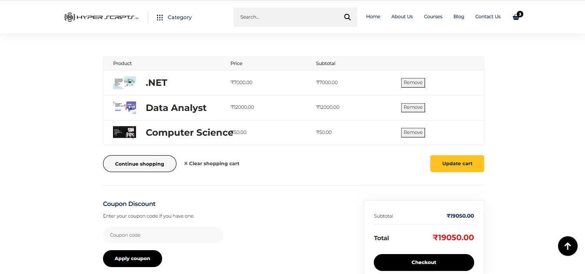
To elevate the application from a mere academic project into a commercially viable, profit-generating business application capable of processing real money, the Razorpay Payment Gateway SDK was deeply integrated into the checkout flow. The architecture ensures extreme financial security and prevents tampering.
The payment process follows a strict 3-step verification model:
const options = {
key: razorpayOrder.key,
amount: razorpayOrder.amount,
currency: razorpayOrder.currency,
order_id: razorpayOrder.razorpay_order_id,
handler: async function (response) {
// Verify Payment Signature cryptographically on the Backend
const verifyData = await verifyRazorpayPayment(response);
Swal.fire("Success", "Payment Successful! 🎉", "success");
}
};
const rzp = new Razorpay(options);
rzp.open();
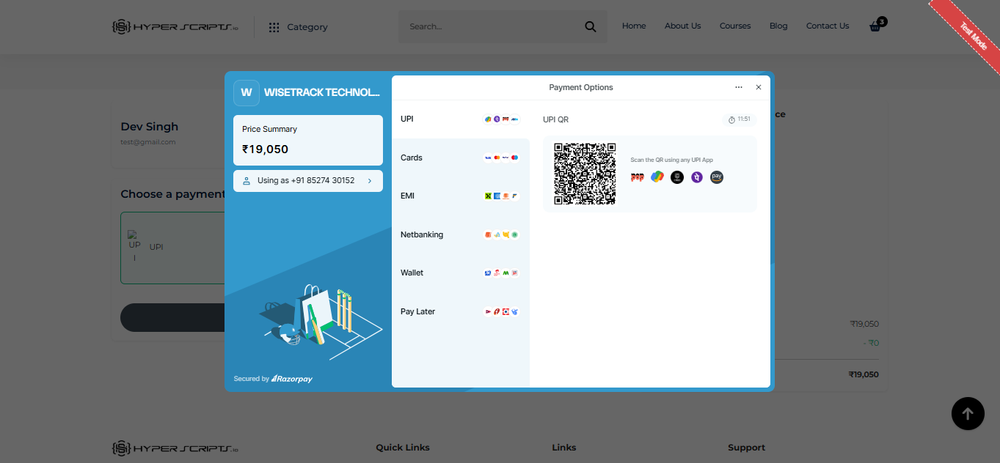
Upon a successful, verified purchase, students are seamlessly redirected to their highly personalized Student Dashboard. This secure area acts as the student's central hub. It fetches user-specific data using the Bearer Token and displays analytical progress using statistical Bootstrap cards ("Total Enrolled Courses", "Active Courses", "Completed Courses").
A standout, premium feature of this EdTech platform is the Live Class & Batch Integration Module. Unlike standard platforms that only offer static, pre-recorded video lectures, this system allows instructors to create specific "Batches". The student's dashboard dynamically queries the database for any active Batches assigned to their profile. It then renders a scheduling table showing upcoming class dates, topics, and exact timings. At the scheduled time, it instantly provides a functional "Join Now" button embedding secure Zoom or Google Meet URLs, facilitating interactive, real-time remote education.
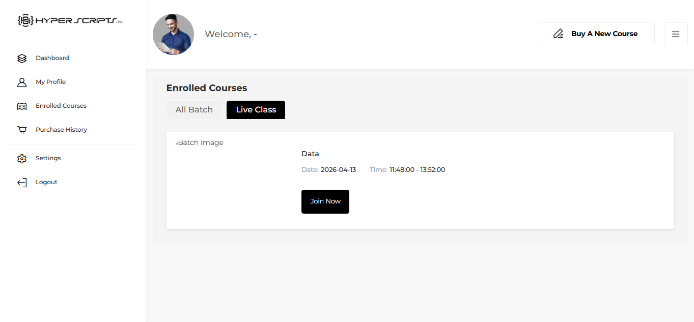
The Admin Panel operates as the central nervous system of the EdTech platform. To ensure highest-level security, access to these routes and APIs is strictly restricted. The .NET backend actively inspects the JWT payload, and if the user lacks the explicit "ADMIN" role, all requests return a 401 Unauthorized or 403 Forbidden response.
Comprehensive Administrative Controls: Within this panel, the administrator wields complete power over the platform's data. They can view comprehensive lists of all registered students, suspend or ban abusive accounts, and permanently purge dummy data. Furthermore, the Course Management module enables admins to upload new educational content, dictate complex pricing and discount structures, assign categories, and schedule Live Batches. Complex HTML forms utilize the JavaScript `FormData` interface to securely transmit multi-part requests, enabling the flawless upload of heavy course thumbnail images and video assets to the server.
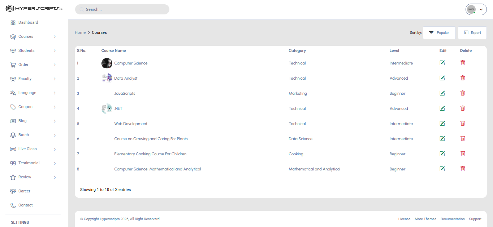
Financial integrity and promotional control are heavily monitored via the dedicated Order and Coupon modules. In the customized `coupon.js` file, the Admin has the ability to execute complete CRUD (Create, Read, Update, Delete) operations for marketing discount codes.
The Admin logic allows precise dictation over how coupons behave: establishing whether a coupon yields a FLAT currency deduction or a PERCENTAGE-based discount, enforcing minimum order thresholds, capping maximum discount limits, and setting strict calendar expiration dates. All deletions prompt a `SweetAlert2` double-confirmation dialog to prevent catastrophic accidental data loss.
Simultaneously, the Orders panel provides a sweeping overview of the platform's financial health. The platform owner can monitor total sales volume, audit individual student invoices, calculate aggregate revenue, and cross-reference whether specific Razorpay transactions resulted in a 'Success' or 'Failure' state. This empowers the business to meticulously manage Profit and Loss margins directly from the graphical user interface without needing to manually inspect database tables.
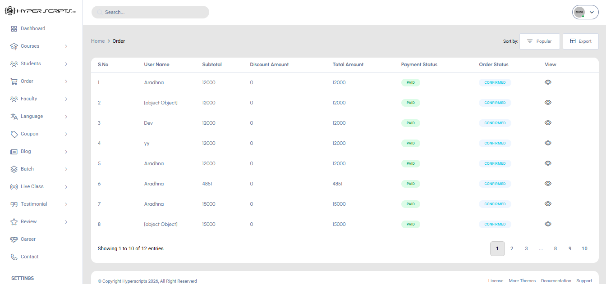
The foundation of this EdTech platform is built upon writing clean, optimized, and secure code. A strict separation of concerns was maintained across the entire stack. Below is the detailed breakdown of how the coding architectures were implemented.
The visual framework of the project was coded using HTML5 structural tags (`
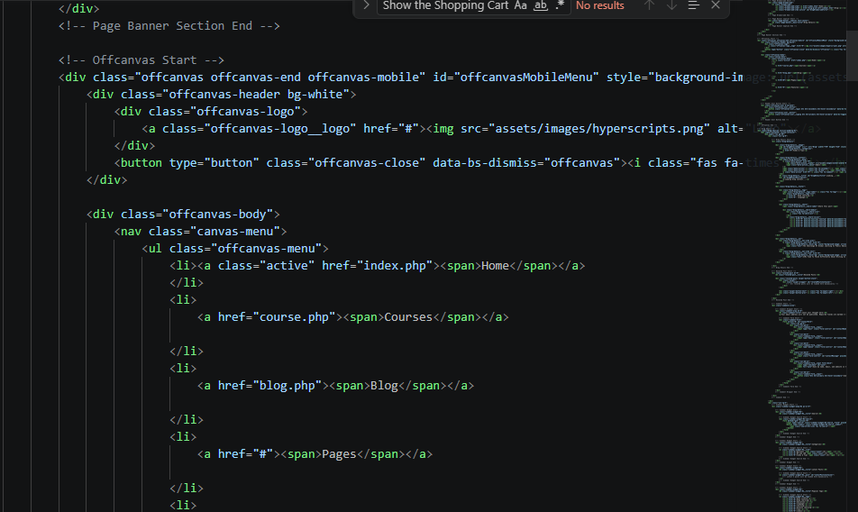
The interactive intelligence of the platform is driven by pure Vanilla JavaScript (ES6). We bypassed heavy frameworks and utilized modern JavaScript functions such as `async/await` and the `fetch()` API. JavaScript files like `get-all-course.js` and `coupon.js` act as the brain of the frontend. They intercept user clicks, gather form data using the `FormData` object, apply Bearer tokens from `localStorage`, and negotiate with the backend server. We also implemented advanced string manipulation and DOM injection techniques (using Template Literals `` ` ``) to paint the screen with data instantly without forcing the browser to refresh.
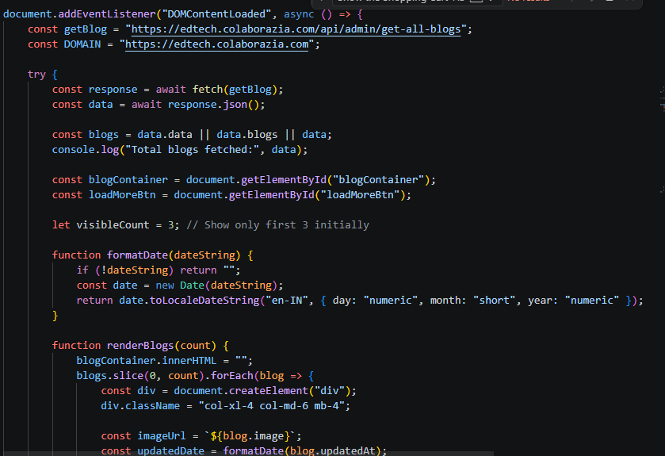
The invisible but critical backbone of the platform is coded in C# utilizing the .NET Core Framework. We developed RESTful Web APIs governed by strongly-typed Models and Controllers. The .NET code utilizes Entity Framework (EF Core) to establish a secure, object-oriented connection to the SQL Database. Security code was written to implement JWT Middleware, ensuring that every incoming request is inspected for a valid token signature. Complex business logic, such as calculating order subtotals and cryptographically hashing Razorpay webhooks, was exclusively written in the .NET environment to prevent any malicious tampering from the client side.
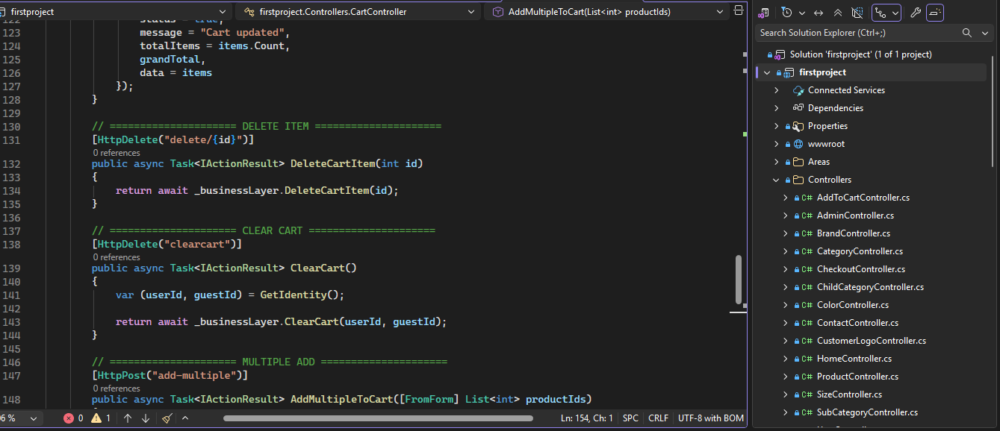
A crucial part of any Learning Management System is its User Interface (UI). This section explains the two most vital landing pages of the platform: the Public Home Page for students and the highly secured Dashboard for Administrators.
The Main Page acts as the digital storefront and the first point of contact for any visiting learner. It is meticulously designed to maximize user engagement and drive course enrollments. Key elements include:
The Admin Dashboard is the restricted, centralized command center for the platform owners. Upon authenticating with an Admin-level JWT token, the platform owner is presented with a high-level overview of the entire business operation.
Dashboard Widgets & Features:
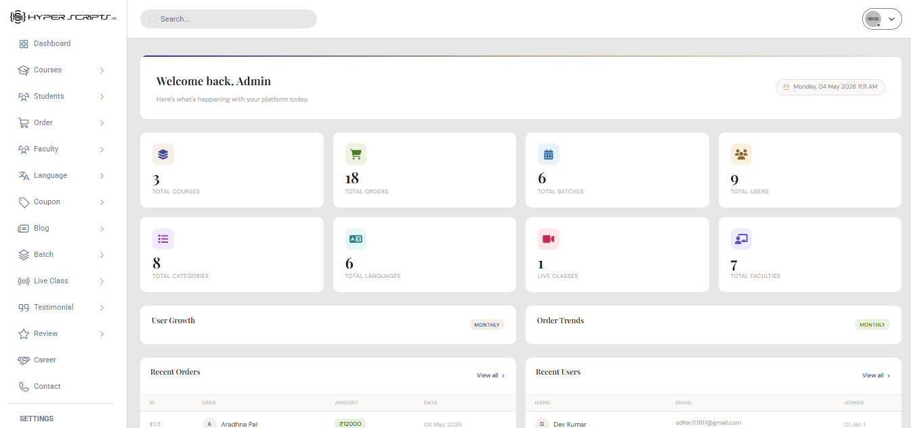
To ensure a flawless, bug-free experience capable of handling thousands of potential concurrent students, rigorous multi-tiered testing methodologies were systematically applied throughout the development lifecycle:
The EdTech Learning Management System successfully conceptualizes, designs, and implements a commercial-grade, highly scalable digital educational platform. By meticulously combining a lightweight, responsive HTML/CSS/JavaScript frontend with a tremendously powerful, highly secure .NET and SQL Database backend, this project strictly adheres to modern software engineering industry standards.
The execution of stateless JWT authentication ensures ironclad data privacy, while the integration of the Razorpay payment gateway transcends this from a mere academic exercise into a fully viable, profit-generating business model. This project stands as a testament to the power of decoupled Full-Stack development, proving capable of serving high-quality education to eager students globally.
While the current iteration of the system is fully operational and feature-rich, future updates could exponentially increase its utility. Proposed enhancements include: